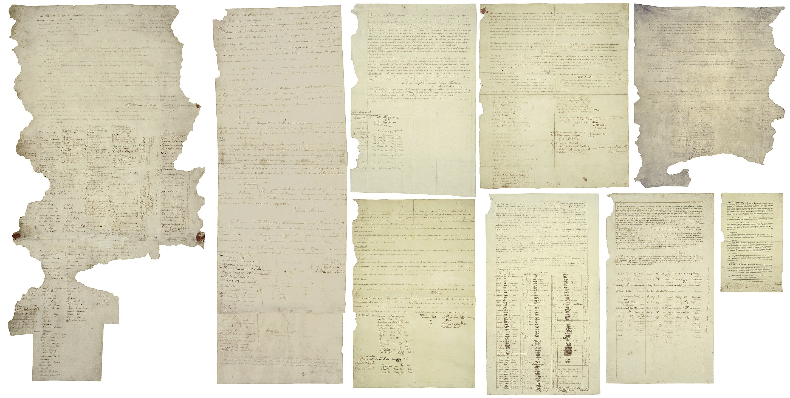
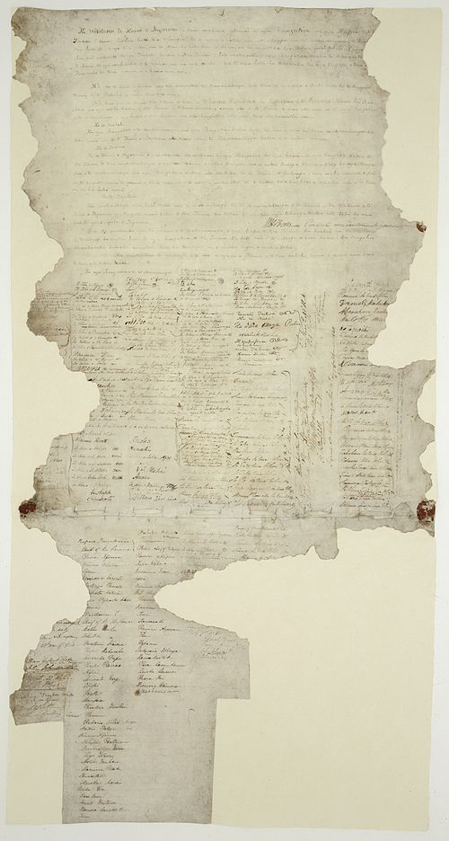

Copies of the treaty of Waitangi:
-

The treaty document is an agreement, not a treaty as recognised in international law, and has no independent legal status, being legally effective only to the extent it is recognised in various statutes.

The treaty signing began in the afternoon. Hobson headed the British signatories. Hōne Heke was the first of the Māori chiefs who signed that day. On February 6, 1840, in Waitangi in the Bay of Islands, forty-three Maori chiefs signed the Treaty of Waitangi. After that, many copies were created in Te Reo Māori and delivered to be signed around New Zealand.
Due to the growing number of British immigrants living in New Zealand, the British government was thinking about forming a civil government there. The British Government wanted to take action. The government gave Captain William Hobson instructions to negotiate a treaty with the Maori.
Māori were given ownership of their land, forests, and fisheries for as long as they wanted under the terms of the 1840 Treaty of Waitangi. But the Maori translation has been changed to make the Maori think that they would have full control of the land of New Zealand. Its actual translation meant that the British had the following things: